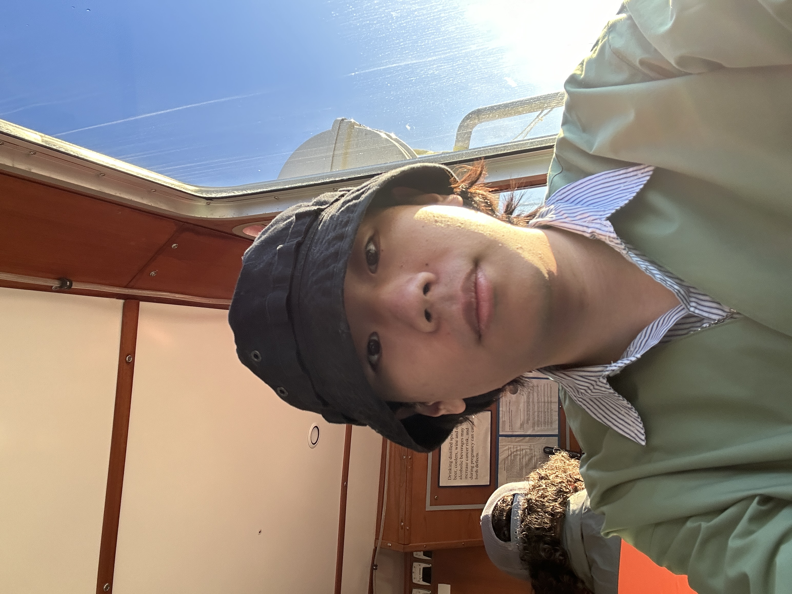

I am a web developer and information science student passionate about building accessible, efficient, and user-friendly web solutions. My focus is on merging technology and design to create impactful online experiences. With a deep interest in web development, I constantly strive to improve my skills in creating seamless user interfaces and functional websites. I also enjoy working on projects that help people better navigate digital spaces.
Xiaoyu Guo
Email: xiaoyu@example.com
Xiaoxue Lin
Email: xiaoxue@example.com
Yixin Ye
Email: yixin@example.com